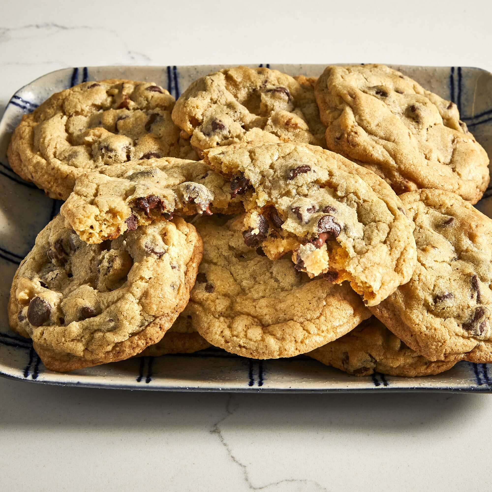

Chocolate Chip Cookies

Description
These classic chocolate chip cookies will taste just like grandma used to make them. With a quick and easy recipe to follow you'll be enjoying this treat in no time!
- Cook time: 10 minutes
- Additional: 30 minutes
- Total: 1 hour
- Prep time: 20 minutes
- Servings: 24
- Yields: 4 dozen cookies
Ingredients
- 1 cup of softened butter
- 1 cup of white sugar
- 1 cup of packed brown sugar
- 2 eggs
- 2 teaspoons of vanilla extract
- 1 tsp of baking soda
- 2 tsp of hot water
- 1/2 tsp of salt
- 3 cups of all-purpose flour
- 2 cups of semisweet chocolate chips
- 1 cup of chopped walnuts
Baking Steps
- Preheat oven to 350 degrees F
- Cream together the butter, white sugar, and brown sugar until smooth
- Beat in the eggs one at a time, then stir in the vanilla
- Dissolve baking soda in hot water,add to batter along with salt
- Stir in flour, chocolate chips, and nuts
- Drop by large spoonfuls onto ungreased pans
- Bake for approximately 10 minutes in the oven, or until the edges are lightly browned